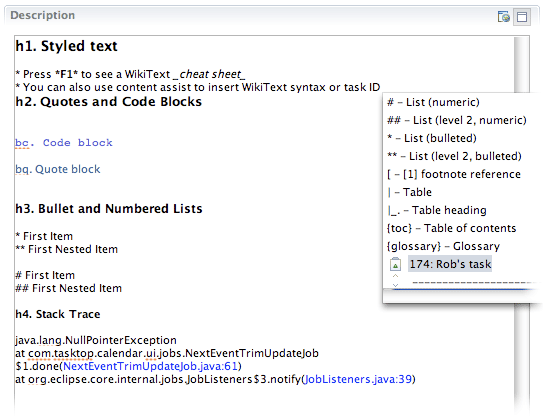
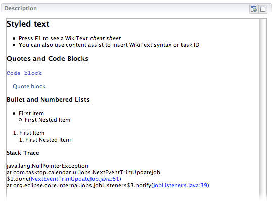

|
The WikiText component is now part of the Mylyn release and is integrated into the Task Editor. Author and preview comments in your choice of 5 popular markup languages:
- Confluence
- MediaWiki
- Textile
- TracWiki
- TWiki
- Note: New languages can be integrated via a common WikiText parsing framework
WikiText is configured on a per Task Repository basis. Choose which language you wish to use from the Editor section of the Task Repository preference page.
Note also that text in the task editor's description and comment fields
will now reflow to fill available space when the editor is resized.
Once a laungage has been chosen, open a task from the repository and type in a comment using wiki language constructs. Press the preview button, to see how your comment will appear to others using the WikiText support.
Also note how previous comments are rendered correctly according to the wiki language you specified. Right click on a comment and select "View Unformatted Text" to see the comment in plain text.
Authoring:

Previewing:
 |